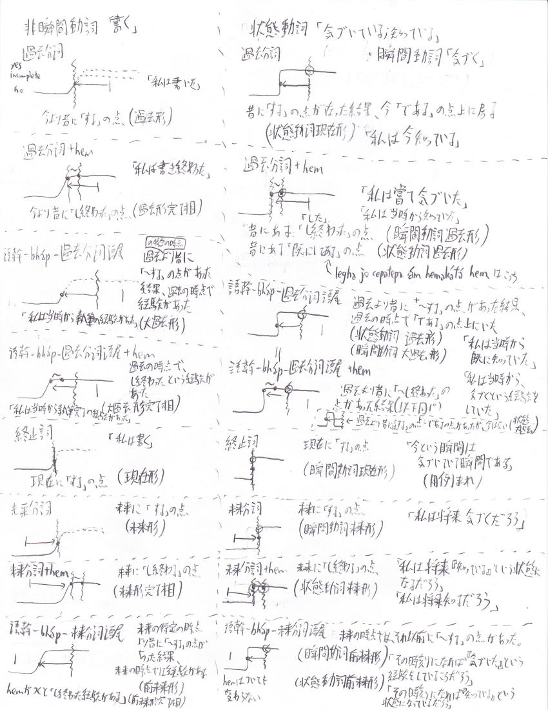

この記事は悠里・大宇宙界隈 Advent Calendar 2017の8日目の記事です。
21.1のおかげで「子供のような絵」をlegha nána ghátuḍi hína cajakáとかghátuḍi hína cajaká leghaとか言えるようになった。…ん、待てよ、あれ、終止詞って直後の名詞を修飾できるんだろうか？過去連体形（過去分詞）と未来連体形（未来分詞）があるのに現在連体形が無いはずはない。
候補としては、
個人的には、4は微妙な気がするがそれ以外はどれもそれなりにありだとは思う。と思って提案したところ、
fafs「過去連体形で表すんじゃないの」 j.v「ふむふむ、韓国語の形容詞みたいな感じか。なら過去完了連体形大過去連体形が欲しいなぁ」 j.v「完了表現はコピュラだけど、hemは無変化だから代わりにbhápúḷでも使うか？」 j.v「動詞過去分詞+bhápúḷ過去分詞」 fafs「長いな」 j.v「語尾が被って冗長だなぁ。動-(a)bháp-adínaという風にするか？」 fafs「辞なら弱化するかも？」 j.v「まあ-bh-は通るし大丈夫でしょ」
ということで、過去分詞による修飾は「動作性の過去」および「状態性の現在」を表す、という仕様にしてみる。まあ韓国語の用言と同様のシステムだな。「ámaom cákíkamúná síbha あなたの出身国」は（ただしsíbhaは文脈上cákíkúḷのoṣaであることを前提とする）B-oṣa cákíkúḷを「〜から来る」という動作だと解釈すれば「ここに来るという動作を過去に発生させたが、あなたにとってのその基点である故郷」ということになるし、B-oṣa cákíkúḷを「Bの出身である」という状態と解釈すれば「あなたにとって、現在やその周辺において『出身である』という性質を持つ場所である故郷」となる。いずれにしても表現の指すところは変わらない。
また、「状態性の過去」（かつての状態）と「動作性の大過去」（詳しい定義については後で考えることにするが、上記の「来る」と「出身地である」の議論を過去の状態について適用した感じ）は動詞と過去分詞語尾の間に-(a)bháp-を挿入して作るということになる。上では失念しているが、バートで大過去と過去完了が別物かどうかという話もある。
とりあえず、「子供のような絵」はlegha nána ghátuḍi hína cajakáとかghátuḍi hína cajakátá leghaとか言うことになる。
進行形が欲しい。
考えたが、不定詞+hemúḷぐらいしか思いつかない。まあそれでいいか。問題は「動作性の現在を表す連体形」をどうするか、だが、hemúḷは明らかに状態を表す動詞なので、hemúḷ自体の過去分詞をとればよい。（ここら辺は韓国語と違うのだなぁ）
今までの例文との整合性も考えると、進行形を使うことは義務ではない、とすべきだろう。ただし、分詞による修飾をやるときには不可欠ということでもある。
要するに、こんな感じである。accúḷ（動作「AはBを書く」；状態「AはBを書いたことのある者である」）を例に取るなら、
基本：
| 過去分詞 | 「過去の動作」及び「現在の状態」を表す。動作は「Aは(動作)をしたことのある者である」という状態とみなすことができる。 |
| 終止詞 | 文末にのみ使用でき、現在起きている動作・習慣的動作などを表す。（現在進行形などもカバーできる） |
| 不定詞 | 「〜するという事象」を表す。hemúḷ「〜がある」を伴うと「〜している、という状態」を表す。 |
| 未来分詞 | 「未来の動作」及び「未来の状態」を表す。 |
動作動詞の文末表現：
| 過去分詞 | ápa aghauṭadhel accadína | 私は過去に本を書いた；私は本を書いた（書き終えたとは言っていない）ことのある者である |
| 過去分詞+hem | ápa aghauṭadhel accadína hem | 私は過去に本を書き終わった；私は本を書き終えたことのある者である |
| 語幹-(a)bháp-過去分詞語尾 | ápa aghauṭadhel accabhápadína | 私は、とある過去の時点で既に本を書いたことがあった |
| 不定詞+hemúḷの過去分詞 | ápa aghauṭadhel accúḷ hemadína | 「私は本を書いている」という状態が現在起きている=私は本を書いている（「不定詞+hemúḷの終止詞」と同じ） |
| 終止詞 | ápa aghauṭadhel accadhí | 私は本を書く |
| 不定詞+hemúḷの終止詞 | ápa aghauṭadhel accúḷ hemadhí | 私は本を書いている |
| 未来分詞 | ápa aghauṭadhel accadíha | 私は本を未来に書くだろう；私は将来本を書いた（書き終えたとは言っていない）ことのある者であるだろう |
| 未来分詞+hem | ápa aghauṭadhel accadíha hem | 私は本を未来に書き終えているだろう；私は将来、本を書き終えたことのある者であるだろう |
| 語幹-(a)bháp-未来分詞語尾 | ápa aghauṭadhel accadíha hem | 私は未来において、「かつて本を書いたことがあった」という状態になるだろう |
| （不定詞+hemúḷの未来分詞） | ápa aghauṭadhel accúḷ hemadíha | 「私は本を書いている」という状態が未来で起きるだろう（未来分詞単体とほぼ等価） |
連体修飾のときには青背景になっている形しか使えないので、「不定詞+hemúḷの終止詞」の補充形として「不定詞+hemúḷの過去分詞」が用いられる。大過去と過去の完了相は別物なので分離した。
状態の動詞の場合は、体系立てて考えるなら一旦動作に引き戻すことになりそうだ。例えば、"ṣiṇṇa, legha jó cepatepa aghauṭaḍi hína ám hemakátá hem."の場合は、「絵と会話の欠如」という状態を発生させた原因の動作であるのは本の印刷・出版であり、それが過去に完了している、というのが体系的理解だろう。もちろん、普通はそんなに深く考えず「ない/なかった」ぐらいの解釈で十分ではあろうが。
状態の現在と動作の過去を区別しないで書くということだが、時の副詞を置いた時はどちらを取るんだろう。
バートの文法用語の建前上、韓国語でいう動詞と韓国語でいう形容詞に区別がないので、「進行形にできるかできないか」「動作とみなした時瞬間的か」で指す位置がズレるって仕様になるのかなぁ。英辞書とかに見る「進行不可」ってやつだな。
「書く」と「知っている；気づいている」で考えるか。前者が通常動作；後者が瞬間動作とそれに後続する状態。
などと、図にまとめていたら整理できた。しかも既存の解説・既存の文との整合性も取れた。すまないが上記の表のことは全て忘れていただこう。
あと、大過去は-bháp-というより「終」の方がいいかも？まあ-bháp-でもいいんだが。
んー、ただ、体系に合うからといってhemúḷが「〜している」と「〜し始める」の両方を表すのはちょっとアレだな。「気づいている」と「気づく」が同じ単語なのは普通に納得がいくけど。
まあ、普通に「〜することが始まる」という風に動詞を分けるのが良かろう。さて造語の時間だ。
パイグでhut2、アイル語情報は…手元にはないな。辞書を倉庫からダウンロードしてきて確認したところh^ut^eeっぽさある。たまに見るこの^って何なんだろう。
hとsとtの後にしか来てないな、エスペラントのĥŝみたいなもんか？
@sashimiwiki @s_y15 アイル語のh^, s^, t^ってどんな音を表すんだろう
— .sozysozbot.@hsjoihs@jekto.vatimeliju (@sosoBOTpi) 2017年12月7日
分離符で、二重子音であることを示す…だったっけ？
— S.Y@タカン系パイグ系日本人 (@S_Y15) 2017年12月7日
xeh^eu「夏の」vs. xeheu「聴く」とかありますが
— .sozysozbot.@hsjoihs@jekto.vatimeliju (@sosoBOTpi) 2017年12月7日
うーむ分からん。
祖語辞書引いてもh^どころか^の入っているアイル語単語が無いな。じゃあ比較的何やっても良さそうではある。h絡みの前例はこんな感じ。
| ラネーメ祖語 | パイグ語 | アイル語 | バート語 |
| fuepq | huep2 | hep'iai | epa |
| riya | hia1 | hiya | ha, heyáúḷ |
| furoo | huo2 | huroo | horabát, horúḷ, úro |
hまたは脱落、と言った感じですかね。
kh, x, zと同音か^が付かない形と同音だと思う。
— Fafs/தமிழ் மாணவன் (@sashimiwiki) 2017年12月8日
なるほどなぁ
— .sozysozbot.@hsjoihs@jekto.vatimeliju (@sosoBOTpi) 2017年12月8日
と言われた。まあkhならますますhでしょ。
ということで先頭の子音はhで良さそうで、su, sujúḷから見るに母音もuでOK。問題はt^だな。
zと同音ということはバートでzになっている可能性がある。とはいえ、バートzはアイルcまたはchというのが前例だからなぁ。まあ普通にtがらみでいいかなぁ
よし、そり舌のṭにしよう。huṭeúḷ「〜が始まる」。
ついでに、例として使いたいし、瞬間動詞「気づく」；状態動詞「気づいている」「知っている」を作るか。まあcan2を使いたいわけですが。
アイルの同根はcanai「認識」か？まあなんかアイル語辞書を「気づく」で検索かけると14件ぐらいヒットするというアレがあるが。まあcanaiでいいか。さて造語。
ということで、cánajúḷ「気づく；気づいている、知っている」ですな。
さて、これでやっとこの表が貼れる。

元ファイルはこちら。